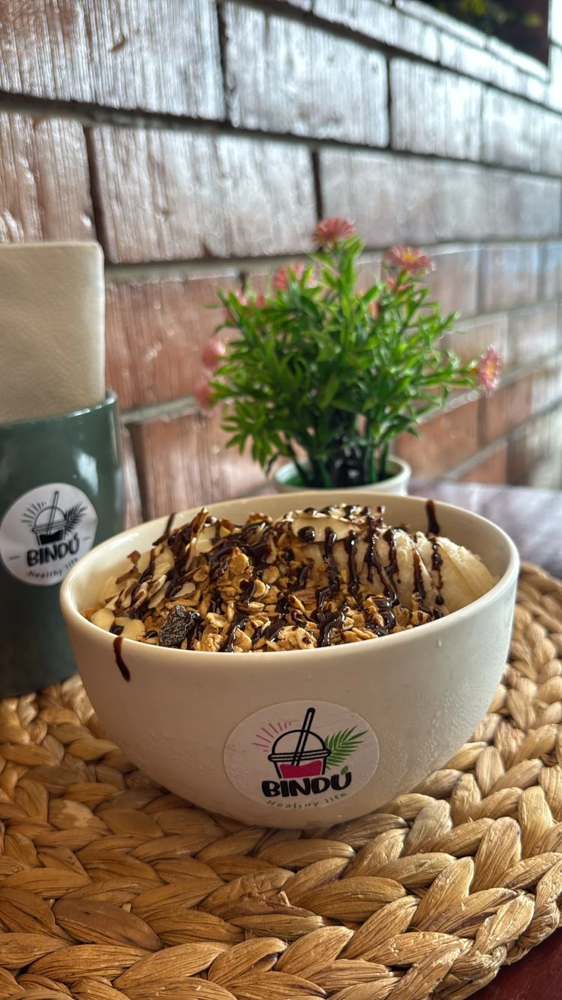

Ingredientes con trazabilidad
El fabricante verifica la identidad, la pureza y la potencia de las materias primas, y evalúa a sus proveedores mediante pruebas y auditorías.
EL BIENESTAR ES UN ESTILO DE VIDA
Hacé del bienestar tu forma de vivir.
Batidos, waffles y bowls para quienes
eligen cuidarse con buen gusto.

EL ARTE DE VIVIR BIENEl buen gusto de cuidarte.
02 / NUESTRA ESENCIA
LA CALIDAD EMPIEZA EN LA BASEDetrás del sabor hay proteína de calidad. Nuestras recetas incorporan proteína de soya y, según la preparación, proteína de suero de leche.
Elegimos bases de un fabricante con controles desde la selección de ingredientes hasta el producto terminado. Estos son los procesos y estándares que respaldan ese trabajo.
El fabricante verifica la identidad, la pureza y la potencia de las materias primas, y evalúa a sus proveedores mediante pruebas y auditorías.
Su programa de calidad utiliza laboratorios acreditados bajo ISO/IEC 17025 o laboratorios externos calificados para analizar los productos.
Cuenta con instalaciones de producción de polvos incluidas en el registro NSF/ANSI 455-2, que evalúa las buenas prácticas de fabricación de suplementos.
ISO/IEC 17025: acredita la competencia técnica de un laboratorio para los ensayos incluidos en su alcance. No es un sello nutricional de cada bebida.
NSF/ANSI 455-2 · GMP: evalúa procesos de fabricación, control de calidad, envasado y almacenamiento en las instalaciones certificadas.
Calidad desde el diseño: el fabricante incorpora revisiones de formulación, especificaciones, vida útil y etiquetado desde el desarrollo. Es un enfoque de trabajo, distinto de una certificación.
Las acreditaciones y certificaciones mencionadas corresponden a laboratorios e instalaciones del fabricante; no certifican el local Bindú ni sus preparaciones. Cualquier certificación deportiva se verifica por producto y mercado.
La proteína aporta aminoácidos que el cuerpo utiliza para construir y mantener sus tejidos. La cantidad y los ingredientes cambian según la receta: consultalos en la ficha de cada producto.
Las preparaciones pueden contener soya, leche, frutos secos u otros alérgenos. Antes de elegir, contanos tus restricciones alimentarias.
Para productos envasados, revisá ingredientes, porción, instrucciones y advertencias en su etiqueta. Consultá también si el té elegido contiene cafeína.
03 / PRODUCTOS & EMPRENDIMIENTO
Descubrí productos envasados para tu nutrición, vida activa y cuidado personal. O conocé la oportunidad de distribución independiente.
Batidos, proteína en polvo, mezclas para bebidas y muffins.
Tés concentrados de hierbas, opciones para la relajación y bebidas con sábila.
Multivitamínicos, fibra, colágeno, calcio, omega-3 y complementos de nutrición específica.
Hidratación, energía, mezclas para después del ejercicio y barras proteicas.
Limpieza, hidratación y cuidado de la piel y el cuerpo.
Resumen de las líneas del catálogo de Costa Rica. Consultá disponibilidad, sabores y presentaciones antes de comprar.
Explorá batidos nutricionales, bebidas y complementos de proteína en polvo, mezclas para bebidas y muffins. Consultá sabores, presentaciones e información de etiqueta.
Confirmá disponibilidad, ingredientes y condiciones de compra del producto elegido.
04 / NOS VEMOS EN BINDÚ
Ciudad Quesada, Costa Rica.
50 metros oeste de Palí.
CADA DETALLE CUENTA
Escribinos por WhatsApp con tu elección. Consultá las opciones y la disponibilidad antes de confirmar tu pedido.
Consultanos por WhatsApp las opciones para llevar y cómo coordinar la entrega o el retiro de tu pedido.
Contanos qué producto te interesa y cualquier alergia o necesidad alimentaria antes de pedir. Te ayudamos a revisar los ingredientes y las opciones disponibles.